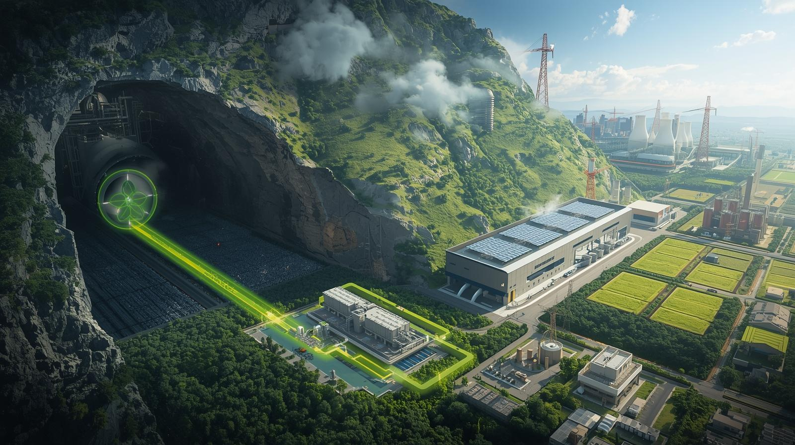

Nápady
Koncepty a směry výzkumu SSCC — energie z orbitu, geotermie, CO₂ z podzemí, syntetická paliva a nová infrastruktura pro regionální energetické uzly.
Energie z kosmu
Orbitální solární panely s nepřetržitým výkonem 24/7 mohou zásobovat energetické uzly SSCC a stabilizovat výrobu syntetických paliv.

Podzemní CO₂ jako zdroj
V některých regionech existují hlubinné kapsy CO₂ — lze je využít jako vstupní zdroj uhlíku pro syntézu namísto fosilních paliv.

Přeměna CO₂
CO₂ není odpad — může být vstupní surovinou pro paliva, chemikálie i energetické nosiče v uzavřeném uhlíkovém cyklu.